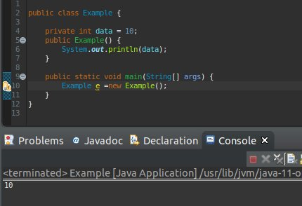
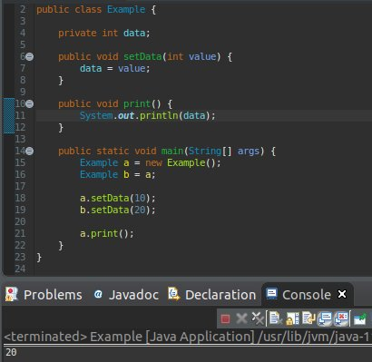
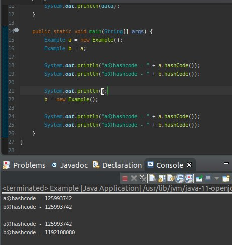

こんにちは。明月です。
今回は「new」というキーワードに関して調べます。
「new」のキーワードは「Java」のプログラムで考えずによく使うキーワードですが、実は一番意味ががキーワードだと思います。
「new」キーワードをよく使うと複雑なプログラムも簡単に解決するが、間違って使うとプログラムがおかしくしやすくなるキーワードです。
以前のページでも簡単に説明したことがありますが、「new」キーワードはクラスをメモリ登録だといいます。c言語の時代には「alloc」だといいます。
実の物理的なメモリはパソコンで付いている「Ram」ですが、プログラム上でメモリは「Stack」と「Heap」があります。
簡単に説明すると、「Stack」は静的で呼出し領域がなくなると値がなくなる特徴があります。「Heap」の場合は参照タイプで動的で解除しないとなくならない特徴があります。
プログラムではこの２つを繋いで使っています。

上の例を見れば、今までよく見てた形ですね。
「main」関数で「Example」クラスを割当て「Example」クラスのコンストラクタで出力していますね。
ここで「Example e = new Example」の形で宣言しました。「Example e」の場合は「int a」と同じ形でメモリ構造で見ると「Example e」は「int」型の整数があります。
実施に「Example」クラスのデータがあることではないです。「new Example」で「Heap」領域に割当て、そのメモリ住所を「Example e」に入れる形になることです。
すなわち、「Example e」は「Stack」領域、「new Example」は「Heap」領域で宣言して「=」で連携することですね。
説明が難しいです。

例をみれば、「Example a」と「Example b」を宣言して「a」には「new」キーワードを使って割当てました。「b」の場合は「b = a」にしました。
そうして「a」に「10」の値を入力して「b」には「20」の値を入力しました。
その後、「a」のデータを出力すると「20」の値が出力しますね。なぜなら、「Heap」メモリには一回だけ割当てて「a」と「b」変数には同じメモリアドレスを入力しました。
すなわち、「a」にあるクラスと「b」にあるクラスは同じなので「b」で値を変更すると「a」にもデータが変わりますね。
次はメモリアドレスでもっと詳しく調べましょう。

「hashcode」は正確にメモリアドレスではないけれども、一つの割当てたオブジェクト別で雄一なデータになるので、クラスのデータが同じでも同じクラスかどうかを区分するような整数の値です。
上の例をみると初めに「Example a = new Exmaple」、「Example b = a」の場合は確かに同じ「hashcode」を持っていますね。
でも「b」の変数で「new Example」した後は「a」と「b」が違う「hashcode」を持っていることで別のクラスだと判断ができます。
クラスと「new」の概念は「OOP」で一番重要だし、基礎的な概念です。すなわち、オブジェクト概念ですね。率直にこの概念を理解できないとプログラムデザイン、設計なので全然できないので、一番重要ではないかと思います。
- [Java スタディ - 22] ジェネリック(Generic type)2019/09/06 22:30:49
- [Java スタディ - 21] IO(Input / Output)2019/09/05 22:58:20
- [Java スタディ - 20] 匿名クラス、そしてラムダ式(Lambda expression)2019/09/04 20:11:28
- [Java スタディ - 19] 例外処理( try ~ catch)2019/09/03 20:37:14
- [Java スタディ - 18] 列挙型(enum)2019/09/02 20:30:34
- [Java スタディ - 17] 抽象クラス2019/08/27 19:05:44
- [Java スタディ - 16] インタフェース2019/08/26 23:40:29
- [Java スタディ - 15] thisとsuper2019/08/23 19:46:10
- [Java スタディ - 14] クラス継承2019/08/22 20:08:37
- [Java スタディ - 13] new2019/08/22 00:06:20
- [Java スタディ - 12] Static2019/08/20 23:46:23
- [Java スタディ - 11] アクセス修飾子2019/08/20 00:42:04
- [Java スタディ - 10] クラス(Class)2019/08/07 20:53:34
- [Java スタディ - 9] 関数 (メソッド、Function)2019/08/06 20:22:48
- [Java スタディ - 8] 配列(Array)2019/08/05 23:22:58
- [Java スタディ - 22] ジェネリック(Generic type)2019/09/06 22:30:49
- [Java スタディ - 21] IO(Input / Output)2019/09/05 22:58:20
- [Java スタディ - 20] 匿名クラス、そしてラムダ式(Lambda expression)2019/09/04 20:11:28
- [Java スタディ - 19] 例外処理( try ~ catch)2019/09/03 20:37:14
- [Java スタディ - 18] 列挙型(enum)2019/09/02 20:30:34
- [Java スタディ - 17] 抽象クラス2019/08/27 19:05:44
- [Java スタディ - 16] インタフェース2019/08/26 23:40:29
- [Java スタディ - 15] thisとsuper2019/08/23 19:46:10
- [Java スタディ - 14] クラス継承2019/08/22 20:08:37
- [Java スタディ - 13] new2019/08/22 00:06:20
- [Java スタディ - 12] Static2019/08/20 23:46:23
- [Java スタディ - 11] アクセス修飾子2019/08/20 00:42:04
- [Java スタディ - 10] クラス(Class)2019/08/07 20:53:34
- [Java スタディ - 9] 関数 (メソッド、Function)2019/08/06 20:22:48
- [Java スタディ - 8] 配列(Array)2019/08/05 23:22:58